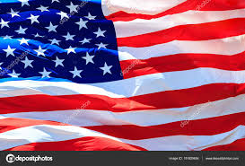

USA
The United States of America (USA), commonly known as the United States (U.S. or US) or America, is a country
comprising 50 states, a federal district, five major self-governing territories, and various possessions.[h] At
3.8 million square miles (9.8 million km2), the United States is the world's third or fourth largest country by
total area[d] and is slightly smaller than the entire continent of Europe's 3.9 million square miles (10.1
million km2). With a population of more than 327 million people, the U.S. is the third most populous country.
The capital is Washington, D.C., and the most populous city is New York City. Forty-eight states and the
capital's federal district are contiguous in North America between Canada and Mexico. The State of Alaska is in
the northwest corner of North America, bordered by Canada to the east and across the Bering Strait from Russia
to the west. The State of Hawaii is an archipelago in the mid-Pacific Ocean. The U.S. territories are scattered
about the Pacific Ocean and the Caribbean Sea, stretching across nine official time zones. The extremely diverse
geography, climate, and wildlife of the United States make it one of the world's 17 megadiverse countries.[22]
Paleo-Indians migrated from Siberia to the North American mainland at least 12,000 years ago.[23] European
colonization began in the 16th century. The United States emerged from the thirteen British colonies established
along the East Coast. Following the French and Indian War, numerous disputes between Great Britain and the
colonies led to the American Revolution, which began in 1775, and the subsequent Declaration of Independence in
1776. The war ended in 1783 with the United States becoming the first country to gain independence from a
European power.[24] The current constitution was adopted in 1788, with the first ten amendments, collectively
named the Bill of Rights, being ratified in 1791 to guarantee many fundamental civil liberties. The United
States embarked on a vigorous expansion across North America throughout the 19th century, acquiring new
territories,[25] displacing Native American tribes, and gradually admitting new states until it spanned the
continent by 1848.[25]
During the second half of the 19th century, the Civil War led to the abolition of slavery.[26][27] By the end of
the century, the United States had extended into the Pacific Ocean,[28] and its economy, driven in large part by
the Industrial Revolution, began to soar.[29] The Spanish–American War and World War I confirmed the country's
status as a global military power. The United States emerged from World War II as a global superpower, the first
country to develop nuclear weapons, the only country to use them in warfare, and a permanent member of the
United Nations Security Council. Sweeping civil rights legislation, notably the Civil Rights Act of 1964, the
Voting Rights Act of 1965 and the Fair Housing Act of 1968, outlawed discrimination based on race or color.
During the Cold War, the United States and the Soviet Union competed in the Space Race, culminating with the
1969 U.S. Moon landing. The end of the Cold War and the collapse of the Soviet Union in 1991 left the United
States as the world's sole superpower.[30]
A multicultural country, the United States is the world's oldest surviving federation. It is a federal republic
and a representative democracy. The United States is a founding member of the United Nations, World Bank,
International Monetary Fund, Organization of American States (OAS), and other international organizations. The
United States is a highly developed country, with the world's largest economy by nominal GDP and second-largest
economy by PPP, accounting for approximately a quarter of global GDP.[31] The U.S. economy is largely
post-industrial, characterized by the dominance of services and knowledge-based activities, although the
manufacturing sector remains the second-largest in the world.[32] The United States is the world's largest
importer and the second largest exporter of goods, by value.[33][34] Although its population is only 4.3% of the
world total,[35] the U.S. holds 31% of the total wealth in the world, the largest share of global wealth
concentrated in a single country.[36]
Despite income and wealth disparities, the United States continues to rank very high in measures of
socioeconomic performance, including average wage, human development, per capita GDP, and worker
productivity.[37][38] The United States is the foremost military power in the world, making up a third of global
military spending,[39] and is a leading political, cultural, and scientific force internationally.[40]